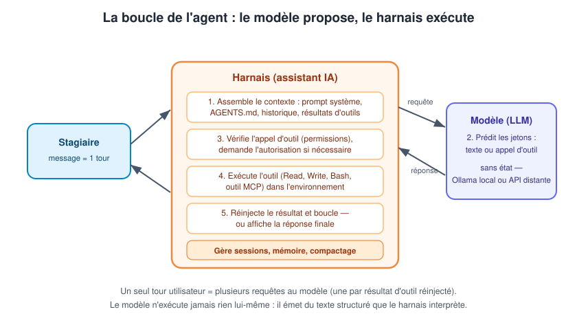
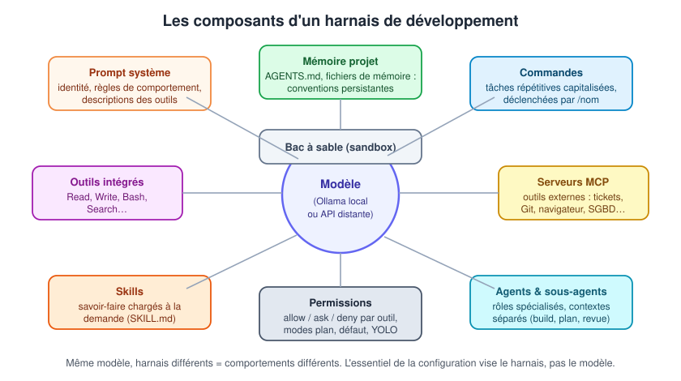
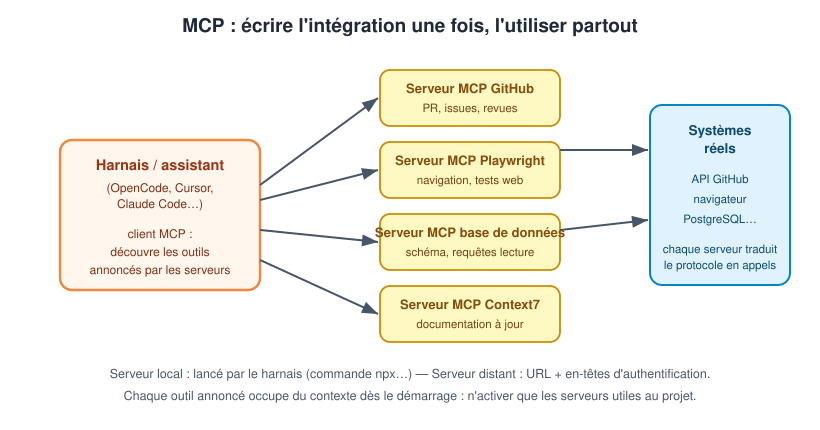

Le modèle seul ne sait rien faire
Rappel du jour 1 : un modèle reçoit des jetons et en prédit d'autres, une requête à la fois. Il ne lit pas de fichiers, n'exécute pas de commandes, ne parcourt pas le Web et ne se souvient pas de la session précédente. Posé sur un disque sous forme de poids GGUF, il est inerte.
Le harnais (harness) est le logiciel qui entoure le modèle pour le transformer en agent utile :
- il assemble le contexte de chaque requête : prompt système, instructions du projet, historique de conversation, résultats d'outils ;
- il expose des outils au modèle : lire un fichier, écrire, exécuter une commande shell, rechercher dans le code ;
- il exécute les appels d'outil demandés par le modèle et lui réinjecte les résultats ;
- il conserve l'historique de la session et gère la fenêtre de contexte (troncature, compactage) ;
- il demande les autorisations avant les actions risquées.
Claude.ai et Claude Code s'appuient sur des modèles proches, mais se comportent différemment parce que leurs harnais diffèrent : le second dispose d'outils de système de fichiers, d'un autre prompt système et d'une couche d'autorisations.
Quand deux assistants donnent des résultats différents « avec le même modèle », la variable est presque toujours le harnais : prompt système, jeu d'outils, politique d'autorisation, gestion du contexte. Avant d'accuser le modèle, vérifiez ce qui lui a été fourni — la plupart des sorties décevantes remontent au contexte ou au harnais, pas aux paramètres.
La boucle agentique
Le diagramme suivant montre le cœur mécanique de tout assistant : la boucle agentique. Le stagiaire envoie un message (un tour) ; le harnais assemble le contexte et interroge le modèle ; le modèle répond par du texte ou par un appel d'outil ; le harnais vérifie les permissions, exécute l'outil, réinjecte le résultat et repart en requête — jusqu'à ce que le modèle produise une réponse finale.

Deux enseignements à tirer du diagramme. D'abord, un seul tour utilisateur engendre souvent plusieurs requêtes au modèle : chaque résultat d'outil déclenche une nouvelle requête transportant tout le contexte accumulé. Ensuite, le modèle n'exécute jamais rien : un « appel d'outil » est du texte structuré (nom + arguments JSON) que le harnais interprète — et qui peut donc se tromper comme tout texte généré (chemin inexistant, option inventée).
Session, tour, requête : la hiérarchie
| Niveau | Définition | Persistance |
|---|---|---|
| Session | Séquence d'interactions du premier message à la réinitialisation | L'historique s'accumule dans la fenêtre de contexte ; disparaît à la réinitialisation |
| Tour | Un message utilisateur + tout ce que l'agent fait en réponse jusqu'à rendre la main | Contient une ou plusieurs requêtes |
| Requête | Un aller-retour harnais → modèle | Unité de facturation (API distante) et de latence |
La session est la mémoire de travail de l'agent : ce qui n'y est pas n'existe pas pour lui. Elle commence vide, accumule messages et résultats d'outil, et s'achève par une réinitialisation ou un compactage. Un travail trop grand pour une seule fenêtre de contexte doit être réparti entre plusieurs sessions — le chapitre 3 formalisera cette discipline.
La durée d'un tour dépend de l'agent, pas du stagiaire : il décide combien d'appels d'outil enchaîner avant de rendre la main. C'est ce qui rend possible le travail en autonomie — et c'est aussi pendant les longs tours que l'agent dérive sans supervision. Quand les résultats déçoivent régulièrement, demander des tours plus courts : un plan d'abord, une étape à la fois.
Complétion, chat, agent : trois générations d'assistance
Les assistants actuels empilent trois générations d'interfaces, toutes présentes dans un même outil :
| Génération | Interface | Initiative | Exemples |
|---|---|---|---|
| Complétion | suggestion en ligne pendant la frappe | le développeur écrit, l'assistant complète | ghost text Copilot, Tab dans Cursor |
| Chat | conversation avec contexte sélectionné | le développeur demande, l'assistant répond | chat d'IDE, explication de code, génération de fonction |
| Agent | délégation d'une tâche complète | le développeur spécifie un objectif, l'assistant lit, modifie, exécute, itère | mode agent Copilot, Composer/Agent Cursor, OpenCode, Claude Code |
La génération agentique ne remplace pas les deux autres : la complétion reste imbattable pour le boilerplate en cours de frappe, le chat pour l'exploration rapide. Ce qui change avec l'agent, c'est l'unité de travail — on passe de la ligne ou de la fonction à la tâche, avec tout ce que cela implique de spécification, de vérification et de permissions. C'est cette bascule que les chapitres 2 et 3 outillent.
L'environnement et le système de fichiers
L'environnement est le monde sur lequel agit l'agent : tout ce qui est hors du harnais. Le système de fichiers en est la forme par défaut — l'agent le perçoit via les résultats d'outil et le modifie via les appels d'outil. Deux propriétés importantes :
- l'agent ne voit l'environnement que par instantanés : si un fichier change après sa lecture (modification manuelle, compilation), il raisonne sur sa copie périmée jusqu'à relecture ;
- l'environnement est la seule couche qui persiste : le contexte d'une session disparaît, les fichiers écrits restent. Tout ce que l'agent devra savoir demain doit aboutir dans l'environnement — c'est le fondement d'AGENTS.md et des systèmes de mémoire.
Les grandes familles d'assistants
| Assistant | Forme | Points forts | Points d'attention |
|---|---|---|---|
| GitHub Copilot | Extension d'IDE (VS Code, JetBrains…) | Complétion en ligne très intégrée, mode agent en progression, adossé aux modèles GitHub/OpenAI | Abonnement par siège ; le code transite par les services GitHub |
| Cursor | IDE complet (fork de VS Code) | Édition multi-fichiers fluide, indexation du projet, UX aboutie | IDE propriétaire ; abonnement ; données traitées côté éditeur sauf mode « privacy » |
| Claude Code | CLI / terminal (+ intégrations IDE) | Harnais agentique complet (outils, sous-agents, hooks, MCP), prompt système personnalisable | Fonctionne sur API Anthropic (distante) ; coût par jeton |
| Codex CLI | CLI / terminal | Agent OpenAI en terminal, modes d'approbation, sandbox | Adossé aux modèles OpenAI |
| OpenCode | CLI / terminal (TUI), client-serveur | Open source et agnostique : n'importe quel fournisseur, y compris Ollama en local ; commandes, skills, agents, MCP | Jeunesse du projet ; qualité dépendante du modèle branché |
Le programme officiel de la formation cite GitHub Copilot et Cursor comme références côté IDE, et OpenCode comme harnais ouvert branché sur Ollama. Ce sont les deux extrémités du spectre : produits intégrés clés en main d'un côté, harnais ouvert à composer soi-même de l'autre. Les concepts — outils, permissions, contextes — sont communs à tous.
Fonctionnalités principales attendues d'un assistant
Le plan officiel liste cinq usages ; voici ce que chacun recouvre concrètement :
- Brainstorming : explorer des options de conception, comparer des approches, générer des variantes de nommage ou de modélisation. L'agent excelle ici car le coût d'une idée est une phrase.
- Documentation : générer README, commentaires de fonctions, documentation d'API à partir du code existant — et la maintenir à jour quand le code bouge.
- Implémentations : écrire du code nouveau (fonctions, composants, endpoints) à partir d'une spécification, en s'appuyant sur les conventions du projet lues dans le contexte.
- Tests : générer des suites de tests unitaires, compléter les cas limites oubliés, écrire les tests d'une fonction avant son implémentation (TDD — atelier du chapitre 3).
- Revues : analyser un diff, signaler les risques (sécurité, performance, lisibilité), vérifier la conformité aux conventions du projet.
Code confidentiel qui ne doit pas sortir du SI → harnais open source + modèle local (OpenCode + Ollama). Confort maximal sur projet non sensible → IDE agentique intégré (Cursor, Copilot). Automatisation en terminal sur gros dépôts → CLI agentique (Claude Code, Codex CLI, OpenCode). La section « Confidentialité » ci-dessous donne les critères précis.
Grille de choix d'un assistant pour l'équipe
Six critères à instruire avant de généraliser un assistant dans une équipe :
- Confidentialité : où vont le code et les prompts ? Un mode entreprise sans entraînement ni rétention est-il disponible, ou faut-il basculer en local ?
- Modèles accessibles : le harnais permet-il de choisir — et notamment de pointer vers un endpoint compatible OpenAI local (Ollama) ?
- Configurabilité versionnable : règles projet, commandes, MCP se règlent-ils par fichiers dans le dépôt (relus en merge request) ou seulement par interface graphique individuelle ?
- Permissions et bac à sable : quel contrôle sur les écritures, le shell et le réseau ? Existe-t-il un mode plan en lecture seule ?
- Écosystème d'outils : MCP supporté ? Les intégrations internes (tickets, CI, documentation) existent-elles déjà côté serveurs ?
- Modèle économique : abonnement par siège, facturation par jeton, ou open source avec coût d'infrastructure interne ?
La réponse à ces six critères dépend du contexte de l'organisation (sensibilité du code, budget, maturité Git) — pas d'un palmarès absolu d'outils. C'est cette grille que l'atelier de l'étape 6 met en pratique sur OpenCode.
Le budget d'attention
Chaque jeton du contexte dispose d'une quantité finie d'influence sur la génération : c'est le budget d'attention. L'instruction du stagiaire est un signal de volume fixe ; tous les autres jetons de la fenêtre sont du bruit concurrent. Quand le contexte grandit, le rapport signal/bruit diminue : une consigne qui dominait une fenêtre de 10 000 jetons devient un bruit de fond à 150 000.
Le symptôme ressemble à de la désobéissance : l'agent accepte une contrainte puis s'en éloigne au fil de la session ; recoller la contrainte n'aide que brièvement. La cause n'est pas l'instruction — c'est tout ce qui entre en concurrence avec elle.
Zone intelligente, zone stupide
Au début d'une session, l'agent est vif et concentré : c'est la zone intelligente. À mesure que la session grandit, il dérive vers la zone stupide : moins rigoureux, plus oublieux, plus sujet aux hallucinations de fidélité. Même modèle, même harnais — seulement davantage de contexte. Pour les modèles de pointe, la bascule est souvent estimée autour de 125 000 à 150 000 jetons ; avec un petit modèle local (8B, fenêtre réelle de 16k), elle arrive beaucoup plus tôt.
La dégradation est progressive et sans message d'erreur : chaque tour est à peine moins bon que le précédent. Signes courants : oubli d'une instruction donnée vingt tours plus tôt, répétition d'une erreur déjà corrigée, affirmation assurée contredite par le contexte.
Une tâche par session ; réinitialiser quand la tâche change ; compacter ou passer le relais quand la session enfle ; charger le contexte pertinent plutôt que massif ; reformuler les contraintes importantes au lieu de compter sur leur énoncé initial. La récupération passe par le retrait de contexte, jamais par son ajout.
Résultats d'outil : le contexte invisible qui sature la fenêtre
Les résultats d'outil constituent l'essentiel du contexte d'une session de programmation : chaque fichier lu, chaque test exécuté, chaque recherche arrive intégralement dans la fenêtre et continue d'occuper des jetons longtemps après avoir cessé d'être utile. Quelques résultats volumineux — un journal de test verbeux, un fichier généré lu en entier — rapprochent la session du bord de la fenêtre plus vite que la conversation elle-même. Avec un modèle local à petite fenêtre, cette vigilance est décuplée : préférer des recherches ciblées (grep sur un motif) à la lecture de fichiers entiers.
Une configuration à cinq étages
Le diagramme suivant récapitule les composants configurables d'un harnais moderne, organisés autour du modèle : le prompt système et la mémoire projet (AGENTS.md) nourrissent le contexte ; les commandes, skills, agents et serveurs MCP étendent les capacités ; les permissions et le bac à sable bornent le rayon d'action.

Le message central du diagramme tient en une phrase : même modèle, harnais différents, comportements différents. L'essentiel de la configuration d'un assistant vise le harnais — fichiers Markdown et JSON dans le projet —, pas le modèle. Ces fichiers sont versionnables, partageables en équipe et relus comme du code : c'est ce qui transforme l'assistant d'un jouet individuel en outil d'ingénierie.
Les sections qui suivent détaillent les quatre composants que le plan officiel qualifie d'« indispensables » : commandes, skills, agents, MCP — en les illustrant dans OpenCode, le harnais retenu pour les ateliers parce qu'open source et branchable sur Ollama. Les concepts se transposent tels quels dans Copilot (instructions et MCP), Cursor (rules et MCP) ou Claude Code (slash commands, skills, subagents, MCP).
AGENTS.md : la mémoire du projet
Avant les composants actifs, un composant passif mais central : AGENTS.md. C'est un fichier Markdown, posé à la racine du dépôt, que le harnais charge dans le contexte au début de chaque session. Il contient les consignes permanentes du projet : conventions de code, commandes de build et de test, architecture, vocabulaire métier, interdits.
Le modèle étant sans état (jour 1), AGENTS.md est la réponse à la question « où écrire une correction pour que toutes les sessions futures la lisent ? ». Une convention expliquée trois fois en session s'oublie trois fois ; écrite dans AGENTS.md, elle est relue à chaque démarrage.
Bonnes pratiques de rédaction :
- des faits actionnables, pas de la prose institutionnelle : la commande exacte de lint, le chemin des tests, la règle de nommage ;
- des sections courtes avec titres explicites — le fichier entre tel quel dans la fenêtre de contexte, chaque jeton compte ;
- un contenu versionné et relu comme le reste du code : un AGENTS.md faux est pire qu'absent, il désinforme toutes les sessions ;
- pour les monorepos, des AGENTS.md par sous-répertoire : le harnais charge celui du dossier de travail.
Système de mémoire : la continuité entre sessions
AGENTS.md porte les consignes statiques du projet. Le système de mémoire du harnais complète ce dispositif pour l'information dynamique : les faits appris en session qu'il faut retrouver demain. Son fonctionnement type :
- en fin de tâche, l'agent (ou le stagiaire, sur demande explicite) écrit dans un fichier de mémoire — décisions prises, pièges rencontrés, préférences exprimées ;
- au démarrage de chaque session, le harnais recharge ce fichier dans le contexte.
C'est la seule façon de rendre un agent « avec état » entre les sessions : le modèle reste sans état, mais le harnais fabrique la continuité en relisant l'environnement. Formuler une demande explicite — « retiens que les migrations se valident avec make db-test » — est plus fiable que d'espérer une mémorisation implicite.
La distinction des échelles mérite d'être posée une fois pour toutes :
| Échelle | Mécanisme | Exemple |
|---|---|---|
| Dans la session | Historique de la fenêtre de contexte | La conversation en cours |
| Entre les sessions | Système de mémoire, fichiers de relais | Décision d'architecture notée hier |
| Pour tout le projet | AGENTS.md, commandes, skills | Conventions, commandes de build |
| Pour tout l'environnement | Système de fichiers | Le code lui-même |
Le principe
Une commande est un prompt pré-rédigé, déclenché par un raccourci (généralement /nom-de-la-commande), qui exécute une tâche répétitive avec un libellé garanti. Au lieu de retaper chaque matin « lance la suite de tests, analyse les échecs et propose des correctifs », l'équipe écrit la commande une fois et l'invoque par /test.
Une commande se définit par :
- un template : le prompt envoyé au modèle, avec un emplacement
$ARGUMENTSpour les paramètres saisis à l'invocation ; - un agent cible (optionnel) : l'agent qui exécute la commande ;
- un modèle (optionnel) : forcer un modèle précis, par exemple un petit modèle rapide pour une tâche mécanique ;
- une description : affichée dans la liste des commandes.
Dans OpenCode : Markdown ou JSON
Définition en Markdown — un fichier par commande dans .opencode/commands/ (projet) ou ~/.config/opencode/commands/ (global) :
---
description: Lancer les tests avec couverture
agent: build
model: anthropic/claude-3-5-sonnet-20241022
---
Lance la suite de tests complète avec rapport de couverture et affiche les échecs.
Concentre-toi sur les tests en échec et propose des correctifs.
Ou en JSON dans opencode.json, avec $ARGUMENTS pour la paramétrer :
{
"$schema": "https://opencode.ai/config.json",
"command": {
"component": {
"template": "Crée un nouveau composant React nommé $ARGUMENTS avec support TypeScript.\nInclus un typage propre et la structure de base.",
"description": "Créer un nouveau composant"
}
}
}
Invocation : /component PanierAchat — le texte saisi remplace $ARGUMENTS dans le template.
Quand créer une commande ?
Le critère est le même que pour un alias shell ou un script : dès qu'un prompt est tapé plus de trois fois avec la même intention. Cas typiques en entreprise :
/revue: appliquer la grille de revue de l'équipe au diff courant ;/ticket 1234: reformater un contenu en ticket conforme au template du projet ;/release: générer le changelog depuis les commits depuis le dernier tag ;/doc: mettre à jour la documentation d'un module après modification.
Les commandes placées dans .opencode/commands/ du dépôt partent avec le projet : un nouveau développeur clone le dépôt et hérite de toute la pratique capitalisée par l'équipe. C'est l'un des gains les plus concrets du développement assisté en équipe — la connaissance des prompts efficaces cesse d'être un savoir tacite.
Commande ou skill ?
La commande est déclenchée explicitement par le stagiaire (/nom). Le skill (compétence) est chargé automatiquement par le modèle quand la tâche en cours correspond à sa description : c'est un savoir-faire conditionnel, pas un raccourci. Un skill répond à « comment bien faire X dans ce projet », une commande à « fais X maintenant ».
Anatomie d'un skill
Un skill est un dossier contenant un fichier SKILL.md avec un frontmatter YAML :
---
name: migration-base-donnees
description: Procédure de création et de validation d'une migration de base de données. À déclencher quand le stagiaire mentionne migration, schéma, alembic ou flyway.
---
# Migration de base de données
1. Créer la migration dans `db/migrations/` avec le préfixe date.
2. Ne jamais modifier une migration déjà appliquée en production.
3. Toujours fournir la migration inverse (down).
4. Valider avec `make db-test` avant de proposer le commit.
Emplacement : .opencode/skills/<nom-du-skill>/SKILL.md dans le projet (ou le dossier de configuration global du harnais). Le corps du skill est du Markdown libre : instructions pas à pas, exemples, références vers d'autres fichiers du dépôt.
La description est le déclencheur
Le modèle ne lit le corps d'un skill que si sa description l'a convaincu de le charger — c'est le mécanisme de divulgation progressive (progressive disclosure) : le contexte ne contient en permanence que le nom et la description des skills ; le contenu complet n'arrive que lorsqu'il sert. Conséquence directe sur la rédaction :
- la
descriptiondoit couvrir ce que fait le skill ET quand le déclencher, en une phrase ; - y placer littéralement les mots-clés que le stagiaire est susceptible d'employer (« migration », « flyway », « schema ») ;
- un skill jamais déclenché est un skill dont la description ne correspond pas au vocabulaire réel de l'équipe.
Tout mettre dans le prompt système ou dans AGENTS.md sature la fenêtre : chaque session paie ces jetons, qu'elles en aient besoin ou non. Les skills déplacent le savoir-faire spécialisé derrière un pointeur de contexte — coût permanent quasi nul, chargement à la demande. Règle de répartition : conventions universelles du projet dans AGENTS.md ; procédures spécialisées dans des skills.
Agent primaire, sous-agent
Un agent au sens du harnais est un rôle configuré : un prompt, un modèle, des outils et des permissions. On distingue :
- l'agent primaire : celui à qui le stagiaire parle directement (ex.
buildpour développer,planpour planifier) ; - le sous-agent (subagent) : un agent spécialisé que l'agent primaire délègue via un outil
task. Le sous-agent travaille dans sa propre fenêtre de contexte, puis rend un résumé à l'agent appelant.
La délégation à un sous-agent a deux bénéfices directs :
- isolation du contexte : une recherche ouverte qui parcourt cinquante fichiers sature la fenêtre du sous-agent, pas celle de l'agent principal — ce dernier ne reçoit que la synthèse ;
- spécialisation : un prompt dédié (« tu es un relecteur de code, concentre-toi sur sécurité, performance, maintenabilité ») et des permissions réduites (lecture seule pour un relecteur) produisent un travail plus fiable qu'un agent généraliste.
Configuration dans OpenCode
Les agents se déclarent dans opencode.json :
{
"$schema": "https://opencode.ai/config.json",
"agent": {
"build": {
"mode": "primary",
"model": "anthropic/claude-sonnet-4-20250514",
"prompt": "{file:./prompts/build.txt}",
"permission": { "edit": "allow", "bash": "allow" }
},
"plan": {
"mode": "primary",
"permission": { "edit": "deny", "bash": "deny" }
},
"code-reviewer": {
"description": "Relit le code : bonnes pratiques et risques",
"mode": "subagent",
"prompt": "Tu es un relecteur de code. Concentre-toi sur la sécurité, la performance et la maintenabilité.",
"permission": { "edit": "deny" }
}
}
}
Points à remarquer :
mode: primaryousubagentdistingue les deux rôles ;promptaccepte un fichier externe ({file:...}) — le prompt devient un artefact versionné ;permissionpar agent surcharge la configuration globale : l'agentplanne peut ni éditer ni exécuter, le relecteur ne peut pas éditer. Le mode Plan d'OpenCode n'est rien d'autre que l'agentplanavecedit: deny.
Le bon grain de délégation
Déléguer au sous-agent : les recherches ouvertes (« où est gérée l'authentification ? »), les revues de gros diffs, la génération de tests d'un module entier, toute tâche dont les résultats intermédiaires n'intéressent pas l'agent principal. Garder dans l'agent principal : les modifications fines qui exigent le contexte de la conversation en cours, les décisions de conception.
Le sous-agent démarre avec le brief que l'agent principal lui transmet — rien d'autre. Un brief incomplet produit un travail hors sujet qui coûtera plus cher à corriger que la tâche directe. Vérifier la qualité de la délégation (le prompt d'appel) avant d'incriminer le sous-agent.
Le problème d'intégration que MCP résout
Sans norme, chaque harnais devrait développer sa propre intégration Linear, Slack, GitHub ou base de données — écrite et maintenue séparément pour chaque assistant. MCP (Model Context Protocol) inverse la charge : l'intégration est écrite une fois sous forme de serveur MCP, et tout harnais compatible s'y connecte.
Le schéma ci-dessous montre l'articulation : le harnais, client MCP, se connecte à des serveurs (GitHub, Playwright, base de données, Context7) ; chaque serveur traduit le protocole en appels vers le système réel et annonce ses outils, qui viennent s'ajouter aux outils intégrés de l'agent.

Lecture du diagramme : l'agent « n'appelle jamais MCP » — il appelle un outil ordinaire, que le harnais a obtenu d'un serveur MCP. Le protocole expose aussi des ressources (données en lecture seule) et des prompts (modèles réutilisables), mais son usage principal est de fournir des outils.
Configurer un serveur MCP
Dans OpenCode, la configuration mcp distingue serveurs locaux (lancés par le harnais) et distants (URL + authentification) :
{
"mcp": {
"playwright": {
"type": "local",
"command": ["npx", "-y", "@playwright/mcp"],
"enabled": true,
"environment": { "BROWSER": "chromium" }
},
"github": {
"type": "remote",
"url": "https://api.githubcopilot.com/mcp/",
"enabled": true,
"headers": { "Authorization": "Bearer {env:GITHUB_TOKEN}" }
}
}
}
- serveur local : une commande que le harnais lance comme processus enfant ; les variables d'environnement se règlent dans
environment; - serveur distant : une URL, avec en-têtes d'authentification — l'interpolation
{env:VAR}lit la variable d'environnement du poste sans écrire le secret dans le fichier de configuration ; "enabled": falsedésactive un serveur hérité sans supprimer sa configuration.
La commande opencode mcp add accompagne l'ajout interactif d'un serveur. Les autres harnais suivent le même modèle : Cursor et Claude Code disposent d'une configuration MCP équivalente (fichier JSON, serveurs locaux ou distants), Copilot prend en charge MCP dans ses versions récentes.
Le coût caché : le contexte
Chaque outil annoncé par un serveur arrive avec sa définition complète — nom, description, schéma de paramètres — chargée dans la fenêtre de contexte dès le démarrage de la session. Quelques serveurs généreux suffisent à démarrer chaque session avec des milliers de jetons de schémas d'outils, avant même la première question, et consomment le budget d'attention pour des outils que la tâche n'utilisera jamais.
Les parades, par ordre de préférence :
- n'activer que les serveurs réellement nécessaires au projet courant ;
- utiliser un harnais à recherche d'outils : le contexte ne contient qu'un pointeur vers le catalogue, la définition complète n'est chargée qu'au moment de l'appel ;
- restreindre la liste d'outils exposés quand le serveur le permet.
Un serveur MCP donne à l'agent un accès réel : base de données, dépôt, navigateur. Les mêmes précautions s'appliquent que pour un accès humain — comptes en lecture seule par défaut, périmètre minimal, jetons à durée de vie limitée. Un agent doté d'un MCP « base de données » en écriture peut détruire des données aussi sûrement qu'un humain, avec la même absence d'intention.
Les deux leviers de sécurité
Le harnais protège l'environnement par deux mécanismes complémentaires, qui résolvent le même problème par deux voies opposées :
- les permissions décident avant : quels appels d'outil s'exécutent librement, lesquels demandent une validation humaine, lesquels sont interdits. Elles maintiennent le stagiaire dans la boucle — au prix d'interruptions ;
- le bac à sable (sandbox) limite pendant : l'agent s'exécute dans un environnement isolé (conteneur, VM, shell restreint) où le rayon d'action d'un mauvais appel est contenu. Il mobilise de l'infrastructure plutôt que de l'attention.
Plus l'isolation du bac à sable est forte, moins les permissions ont besoin d'être restrictives — et inversement.
La demande d'autorisation
Quand un appel d'outil n'est pas préapprouvé, le harnais se met en pause et affiche une demande d'autorisation. Trois issues : approuver une fois, approuver pour la session, ou refuser. Le refus n'est pas un simple blocage : il est renvoyé au modèle comme un résultat d'outil ordinaire, et la plupart des harnais permettent d'y joindre un message — « pas comme ça, utilise le script de migration » arrive précisément au moment où le modèle décide de la suite. Refuser est un acte de pilotage.
Le coût : chaque demande est une attente synchrone. Un agent qui déclenche des demandes en permanence ne peut pas travailler sans supervision.
Les modes d'autorisation
| Mode | Lectures | Écritures et shell | Usage typique |
|---|---|---|---|
| Lecture seule / plan | automatiques | bloquées | Recherche, planification, revue |
| Par défaut | automatiques | sur autorisation | Travail quotidien supervisé |
| Modification automatique | automatiques | éditions automatiques, shell sur demande | Dépôts fiables, changements mécaniques |
| Entièrement automatique (« YOLO ») | automatiques | automatiques | Bacs à sable uniquement, exécutions sans supervision |
Un mode agent associe un niveau d'autorisation et des instructions de comportement injectées dans le prompt système : le mode plan ne se contente pas de bloquer les écritures, il indique au modèle qu'il est en phase de planification, pour qu'il lise et questionne au lieu de lutter contre la barrière.
Changer de mode au cours d'une tâche est normal et gratuit : mode plan pendant que l'approche se dessine, mode par défaut pour les premières modifications délicates, modification automatique quand l'agent a fait ses preuves, contournement complet uniquement dans un bac à sable.
Permissions fines dans OpenCode
La configuration permission accepte trois actions — allow, ask, deny — par outil, avec des motifs par commande :
"permission": {
"edit": "deny",
"bash": { "git *": "allow", "rm *": "deny", "*": "ask" },
"external_directory": { "~/secrets/**": "deny", "*": "allow" }
}
Règles de lecture de cette configuration :
- les outils pilotables incluent
read,edit,bash,glob,grep,webfetch,websearch,task,external_directory… ; - pour un objet
{ motif: action }, l'ordre d'insertion compte : la dernière règle correspondante l'emporte — placer les règles larges d'abord, les exceptions fines ensuite ; permission: "allow"en chaîne au niveau racine est un raccourci « tout autoriser » — rarement ce que l'on veut ;- la configuration par agent surcharge la configuration globale.
Les niveaux de bac à sable
| Niveau | Ce que c'est | Ce que cela contient |
|---|---|---|
| Shell restreint | Confinement OS autour de chaque commande | Écritures hors projet, accès réseau |
| Conteneur | Système de fichiers neuf, sans identifiants montés, détruit après usage | Tout ce que l'agent fait sur sa machine |
| VM / cloud | Machine entièrement séparée | Tout, y compris les sorties au niveau noyau |
Les actions qui en sortent légitimement : un agent doté des identifiants Git peut pousser du code ; un agent avec accès réseau peut appeler des API de production. Décider ce qui franchit la frontière (identifiants montés, réseau ouvert, webhooks) avant de choisir le niveau d'isolation. Le bac à sable protège la machine, pas le dépôt distant ni le client.
Où vont les données ?
La question centrale pour un usage professionnel : que deviennent le code, les prompts et les résultats ? Trois régimes coexistent :
| Régime | Flux de données | Exemples |
|---|---|---|
| Cloud éditeur | Code et prompts traités sur les serveurs de l'éditeur ; conservation selon contrat | Copilot, Cursor (mode standard), Claude Code |
| Cloud avec engagement contractuel | Traitement distant, mais sans entraînement des modèles sur les données et sans rétention (mode entreprise / privacy) | Copilot Business, Cursor Privacy Mode, offres entreprises |
| Local intégral | Aucune donnée ne quitte la machine | OpenCode + Ollama sur le poste |
Les points de vigilance contractuels, dans l'ordre : le code sert-il à entraîner les modèles ? Quelle durée de rétention des prompts ? Les données transitent-elles par des sous-traitants ? Quel périmètre géographique de traitement ? Ces questions relèvent du DPO ou du RSSI de l'organisation — le développeur doit savoir les poser avant d'activer un assistant sur un dépôt sensible.
Les prompts révèlent le vocabulaire métier, les chemins de fichiers trahissent l'architecture, les résultats de tests contiennent des jeux de données réels, et les journaux d'erreurs embarquent parfois des secrets (chaînes de connexion, jetons). Un assistant configuré trop largement diffuse plus que du code : vérifier qu'aucun .env ni fichier de secrets n'entre dans le contexte, et configurer les permissions external_directory en conséquence.
Les secrets dans la boucle agentique
Trois règles simples :
- les secrets vivent dans des variables d'environnement ou un gestionnaire de secrets, jamais dans les fichiers de configuration de l'assistant — la syntaxe
{env:GITHUB_TOKEN}des en-têtes MCP existe précisément pour cela ; - les fichiers de secrets (
.env,*.pem, trousseaux) sont exclus du contexte par configuration (permissionsdeny,.gitignore, règles d'indexation de l'IDE) ; - un agent qui doit s'authentifier reçoit un jeton à périmètre et durée minimaux, pas un compte de service administrateur.
Le local comme réponse radicale
Avec OpenCode branché sur Ollama (section suivante), la totalité de la boucle — modèle, contexte, outils — s'exécute sur le poste : aucune donnée ne transite par un tiers. Le prix à payer est connu depuis le jour 1 : des modèles plus petits, donc moins capables, et une fenêtre de contexte réduite. Pour du code confidentiel, l'arbitrage penche nettement vers le local ; pour du prototypage non sensible, le cloud reste plus productif. La souveraineté numérique — dépendance aux éditeurs, pérennité des offres, localisation — prolonge cet arbitrage au niveau de l'organisation : c'est un des fils du débat du chapitre 3.
Pourquoi OpenCode pour cette formation
OpenCode est un harnais open source, agnostique en fournisseurs : il ne vend ni modèle ni abonnement, et se branche sur n'importe quel endpoint — API distantes comme serveur Ollama local. Il couvre tous les composants vus dans ce chapitre (commandes, skills, agents, MCP, permissions) et fonctionne en terminal (TUI), avec une architecture client/serveur. C'est le véhicule d'atelier idéal : configuration visible en clair, concepts transposables aux assistants propriétaires.
Prérequis issus du jour 1
- Ollama installé et servi (natif ou Docker Compose), API joignable sur
http://localhost:11434; - au moins un modèle tiré et vérifié (
ollama list,ollama ps) ; - un modèle configuré « développement assisté » : le Modelfile
revue-codede l'atelier du jour 1, ou un modèle équivalent avectemperature 0.2etnum_ctx 16384.
Configuration du fournisseur Ollama
OpenCode déclare les fournisseurs dans opencode.json. Ollama expose un endpoint compatible OpenAI (jour 1), donc la connexion passe par le paquet @ai-sdk/openai-compatible :
{
"$schema": "https://opencode.ai/config.json",
"provider": {
"ollama": {
"npm": "@ai-sdk/openai-compatible",
"name": "Ollama (local)",
"options": {
"baseURL": "http://localhost:11434/v1"
},
"models": {
"llama3.1:8b": {
"name": "Llama 3.1 8B (local)"
},
"revue-code": {
"name": "Revue de code (Modelfile jour 1)"
}
}
}
}
}
Chaque clé de models doit correspondre exactement au nom Ollama (ollama list). Le modèle se sélectionne ensuite dans l'interface sous la forme ollama/llama3.1:8b.
Le function calling d'un petit modèle local est fragile avec une fenêtre de contexte étroite : les définitions d'outils du harnais consomment une part importante de num_ctx. Si les appels d'outil échouent ou si l'assistant « oublie » ses outils, augmenter num_ctx côté Ollama (16k–32k) et vérifier la mémoire disponible (ollama ps). Choisir de préférence un modèle annoncé compatible outils (Llama 3.1+, Qwen, Mistral).
Adapter ses attentes à un modèle local
Un modèle local de 8B n'est pas un modèle de pointe distant. Les ajustements qui changent tout :
- réduire le nombre d'outils actifs : désactiver les serveurs MCP superflus, chaque définition d'outil pèse sur le contexte et sur la capacité de choix du modèle ;
- découper plus fin : des tours courts, une tâche par session, des instructions explicites — la zone intelligente d'un petit modèle arrive vite ;
- fournir le contexte à la main : ouvrir les fichiers pertinents plutôt que laisser l'agent explorer largement ;
- privilégier les modèles « instruct » récents et, pour le code, les familles reconnues (Llama, Qwen, DeepSeek-Coder selon disponibilité dans la bibliothèque Ollama) ;
- garder le cloud pour l'exceptionnel : certains harnais permettent de changer de modèle en cours de session — modèle local au quotidien, modèle distant pour un débogage difficile, si la confidentialité le permet.
Vérification de bout en bout
Séquence de contrôle après configuration :
# 1. Le serveur Ollama répond
curl http://localhost:11434/api/version
# 2. Le modèle cible est présent et compatible outils
ollama show llama3.1:8b | head -20
# 3. OpenCode démarre et liste le fournisseur
opencode models | grep ollama
# 4. Dans une session OpenCode : poser une question simple,
# puis demander une lecture de fichier pour valider la boucle d'outils.
Le test décisif est le 4 : une question simple valide la chaîne modèle ↔ harnais ; une demande de lecture de fichier valide les appels d'outil via le modèle local. Si la réponse arrive mais que l'outil ne s'exécute jamais, le diagnostic porte sur le function calling du modèle (encart ci-dessus), pas sur l'installation.
Brainstorming : explorer avant de s'engager
Le brainstorming est l'usage où le rapport valeur/coût est le plus élevé : une idée coûte une phrase. Méthode efficace en trois temps :
- cadrer : donner le contexte réel (contraintes techniques, existant, non-négociables) plutôt qu'une question nue — « je dois stocker des sessions utilisateur, l'existant est en PostgreSQL, contrainte : pas de nouvelle infrastructure » ;
- diverger : demander explicitement plusieurs options contrastées avec leurs compromis (« propose trois approches, avec pour chacune les avantages, les risques et le coût de mise en œuvre ») ;
- converger : faire critiquer l'option préférée sans révéler sa préférence — formulation neutre pour éviter la sycophantie (le modèle complaisant qui approuve parce que le stagiaire semble sûr de lui).
Avec un modèle local, ce troisième point est encore plus important : les petits modèles sont plus sensibles au cadrage du prompt. « Examine ce code » produit une analyse plus honnête que « ce code est-il bon ? ».
Documentation : générer juste, maintenir vrai
Deux pièges classiques de la documentation générée : la documentation inventée (l'assistant décrit un comportement qu'il suppose, pas celui qu'il a lu) et la documentation pléonastique (elle reformule le code sans rien ajouter). Les parades :
- faire lire le code réel avant de demander la documentation (fichier ouvert dans le contexte, pas deviné) ;
- demander explicitement ce que le code ne dit pas : pourquoi cette approche, quelles limites, quel contexte d'utilisation ;
- versionner la documentation générée et la revoir comme du code — une revue humaine reste la seule garantie de justesse.
Sur un README de module : fournir la liste des fichiers, demander structure imposée (objet, installation, usage, limites), relire chaque affirmation factuelle.
Implémentation : spécifier, découper, vérifier
L'implémentation assistée échoue rarement sur le code, presque toujours sur le cadrage. La séquence qui fonctionne :
- une spécification courte mais complète : entrée/sortie, cas limites, contraintes, style attendu ;
- un découpage en étapes vérifiables — demander un plan d'abord, valider, puis faire implémenter étape par étape (un tour = une étape) ;
- une vérification systématique : tests exécutés, compilation, relecture du diff. Ne jamais intégrer du code non exécuté.
Le chapitre 3 transforme cette séquence en flux outillé (spécification → TDD → commit → pull request).
Tests : le meilleur premier investissement
Générer des tests est la tâche idéale pour débuter avec un assistant : la valeur est immédiate, le risque faible (un mauvais test échoue ou se remarque à la revue), et le résultat est vérifiable par nature. Usages par ordre de rentabilité :
- compléter les cas limites d'une suite existante : fournir la fonction et ses tests actuels, demander les cas manquants ;
- écrire les tests d'une fonction avant implémentation (TDD — atelier du chapitre 3) ;
- caractériser du code legacy : faire écrire les tests qui figent le comportement observé avant refactorisation.
Vigilance : un test généré peut tester l'implémentation au lieu du comportement (il casse au premier refactor légitime), ou pire, asserter la sortie actuelle du code même quand elle est fausse. Relire chaque assertion en se demandant : « ce test échouerait-il si le code régressait ? ».
Revues : une deuxième paire d'yeux, pas un oracle
La revue automatisée complète la revue humaine, ne la remplace pas. Ce qu'elle attrape bien : violations de conventions, duplication, gestion d'erreurs manquante, risques de sécurité usuels (injections, secrets en dur). Ce qu'elle rate : la pertinence métier, l'architecture au-delà du diff, les implications d'exploitation.
Configuration recommandée : une grille de revue explicite (via la commande /revue de l'atelier ou un sous-agent relecteur en lecture seule), appliquée au diff — jamais au dépôt entier, le contexte exploserait pour un signal dilué.
Dans les cinq cas, la qualité de la sortie suit la qualité du contexte fourni et du découpage demandé. Ce ne sont pas cinq compétences différentes : c'est la même discipline — spécifier, charger le bon contexte, vérifier — appliquée à cinq intentions.
GitHub Copilot dans l'IDE
Le programme officiel cite Copilot comme référence côté éditeur. Ses trois surfaces de travail :
- la complétion en ligne (ghost text) : suggérée pendant la frappe, acceptée au clavier — utile pour le code répétitif, les tests, le boilerplate ;
- le chat intégré : questions sur le code sélectionné, génération de fonctions, explication, corrections — avec le contexte des fichiers ouverts ;
- le mode agent : sur une tâche décrite en langage naturel, l'agent propose des modifications multi-fichiers, exécute des commandes et itère — avec validations à chaque étape sensible.
Réflexes de configuration en entreprise : vérifier le mode de confidentialité du plan (Business/Enterprise : pas d'entraînement sur le code), activer le filtrage de similarité avec du code public si la politique l'exige, et restreindre les références aux suggestions longues recopiées de dépôts ouverts.
Cursor : l'IDE agentique
Cursor remplace l'IDE lui-même (fork de VS Code : extensions, raccourcis et thèmes sont conservés). Ce qui le distingue :
- indexation du projet : le dépôt est indexé pour retrouver automatiquement les fichiers pertinents à chaque requête — le contexte est assemblé sans sélection manuelle ;
- édition multi-fichiers : une instruction produit des modifications cohérentes sur plusieurs fichiers, présentées en diff acceptables individuellement ;
- règles projet : l'équivalent d'AGENTS.md (fichiers de règles versionnés) pour les conventions permanentes ;
- MCP : connexion aux serveurs d'outils externes comme dans OpenCode ;
- choix du modèle : plusieurs modèles distants sélectionnables ; les versions récentes permettent de pointer vers un endpoint compatible OpenAI, donc vers Ollama en local — avec les mêmes réserves sur la fiabilité des appels d'outil qu'avec tout petit modèle local.
Prompt système, règles projet (AGENTS.md / rules), commandes, MCP, permissions, modes : les composants sont les mêmes partout, seuls les noms et les emplacements de configuration changent. Un développeur qui maîtrise les concepts du jour 2 change d'outil sans repartir de zéro — c'est l'objectif pédagogique de cette journée.
Symptômes et correctifs
| Symptôme | Cause probable | Correctif |
|---|---|---|
| Le fournisseur n'apparaît pas dans l'assistant | baseURL erronée ou Ollama arrêté |
Vérifier curl http://localhost:11434/api/version ; corriger http://localhost:11434/v1 |
| « model not found » | Nom de modèle différent entre models et ollama list |
Aligner exactement la clé (tag inclus : llama3.1:8b) |
| Réponse extrêmement lente | Inférence CPU (VRAM insuffisante) ou num_ctx démesuré |
ollama ps : viser 100 % GPU ; réduire num_ctx ou la taille du modèle |
| Les outils ne s'exécutent jamais | Function calling du modèle en échec (contexte trop étroit, modèle non outillé) | Augmenter num_ctx (16k–32k) ; choisir un modèle compatible outils (Llama 3.1+, Qwen, Mistral) |
| L'assistant « oublie » les consignes d'AGENTS.md | Session trop longue, dégradation de l'attention | Réinitialiser la session ; raccourcir AGENTS.md ; une tâche par session |
| Erreurs d'authentification MCP distant | Jeton absent ou expiré | Vérifier la variable d'environnement référencée par {env:VAR} |
| Le conteneur OpenCode ne voit pas Ollama | Réseau Docker distinct | Même réseau Compose (nom DNS ollama) ou http://host.docker.internal:11434 |
| Chaque session démarre avec des milliers de jetons « d'outils » | Serveurs MCP trop nombreux activés | Désactiver les serveurs inutiles ("enabled": false) |
- Le serveur Ollama répond-il (
/api/version) ? 2. Le modèle est-il chargé et sur GPU (ollama ps) ? 3. L'assistant liste-t-il le fournisseur (opencode models) ? 4. Une requête simple passe-t-elle ? 5. Un appel d'outil s'exécute-t-il ? Remonter la chaîne s'arrête au premier maillon cassé — dans 90 % des cas d'atelier, le coupable est le nom du modèle ou lenum_ctx.
Ce que le jour 2 rend possible
À l'issue de cette journée, la boucle complète fonctionne en local : un harnais configuré (AGENTS.md, commandes, skills, sous-agents, MCP, permissions) dialogue avec un modèle servi par Ollama, lit et modifie le système de fichiers, exécute des commandes sous contrôle d'autorisations. Il manque une pièce pour en faire un outil d'équipe : l'inscription de ce travail dans un flux de développement maîtrisé — spécification, tests d'abord, commits, revue, intégration.
C'est l'objet du chapitre 3 : transformer l'assistant « qui sait coder » en partenaire d'un flux Git outillé, avec des garde-fous automatisés à chaque étape. La configuration produite en atelier aujourd'hui (.opencode/ versionné, permissions, relecteur en sous-agent) en est précisément la brique de base : le jour 3 ne change pas d'outil, il le met au travail dans un processus.
Les questions ouvertes pour le jour 3
- comment formaliser une spécification exploitable par l'agent (template, niveau de détail) ?
- comment configurer un flux Git où l'agent commute, pousse et ouvre des pull requests sous conditions ?
- comment un flux TDD transforme la vérification — le point faible structurel de la génération — en garde-fou automatique ?
- quelles limites accepter : hallucinations, dépendance, éthique et propriété intellectuelle ?
L'atelier du jour 2 met en place, sur le dépôt de démonstration fourni par le formateur, une configuration d'assistant complète et versionnée. Chaque étape produit un fichier dans .opencode/, commité au fil de l'eau : à la fin, le dépôt embarque toute la configuration de l'équipe.
Étape 1 — Installer OpenCode et le brancher sur Ollama
Installer OpenCode selon la documentation officielle (opencode.ai), reprendre la configuration fournisseur de la section précédente dans opencode.json à la racine du projet, et valider la séquence de bout en bout. Critère de réussite : une réponse du modèle local dans la TUI, et une lecture de fichier exécutée via outil.
Étape 2 — Rédiger AGENTS.md
À partir du dépôt de démonstration, rédiger un AGENTS.md utile : commande de build exacte, commande de test, conventions de nommage, architecture en trois phrases, interdits. Le faire relire par l'assistant lui-même (« Que retiens-tu de ce projet après lecture d'AGENTS.md ? ») — la réponse révèle les trous du fichier. Structure minimale attendue :
# AGENTS.md
## Build et tests
- `make build` — compilation du projet
- `make test` — suite de tests complète
## Conventions
- Nommage : snake_case en Python, composants React en PascalCase
- Toute fonction publique est typée et documentée
## Interdits
- Ne jamais committer de fichier `.env` ni de donnée réelle dans les fixtures
Étape 3 — Créer deux commandes
.opencode/commands/test.md: lancer la suite de tests, analyser les échecs, proposer des correctifs (agentbuild) ;.opencode/commands/revue.md: appliquer la grille de revue de l'équipe (sécurité, performance, lisibilité) au diff Git courant.
Les tester sur une modification volontairement médiocre du dépôt (duplication, nommage approximatif) et comparer la sortie de /revue avec et sans la grille.
Étape 4 — Créer un skill
Rédiger .opencode/skills/conventions-commit/SKILL.md : format de message de commit du projet (type, portée, sujet impératif, corps). La description doit contenir les mots-clés « commit », « message », « versionner ». Vérifier le déclenchement automatique en demandant « prépare un message de commit pour ces changements » — sans citer le skill.
Étape 5 — Déclarer un sous-agent relecteur
Ajouter l'agent code-reviewer de la section précédente (mode subagent, edit: deny) et déléguer la revue du diff de l'étape 3. Comparer avec la commande /revue : même modèle, contexte différent — la discussion porte sur ce que chaque approche coûte et rapporte.
Étape 6 — Configurer permissions et MCP
- permissions globales :
edit: ask,bashen{ "git status": "allow", "rm *": "deny", "*": "ask" }; - ajouter un serveur MCP local utile au projet de démonstration (par exemple un serveur de documentation) et observer l'impact sur le démarrage de session ;
- vérifier qu'une commande destructive (
rm) est bien refusée sans demande, et qu'une édition déclenche la demande d'autorisation.
Chaque stagiaire dispose d'un assistant fonctionnel sur modèle local : AGENTS.md, deux commandes, un skill, un sous-agent et des permissions — le tout versionné dans .opencode/ et AGENTS.md. Le chapitre 3 déroule un flux de développement complet (spécification → TDD → commit → pull request) sur cette configuration.